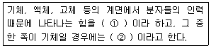

인쇄기능사 (2009-07-12 기출문제)
1과목: 임의구분
1. 다음 중 색온도가 가장 높은 색의 광원에 해당되는 것은?
- 파랑
- 초록
- 빨강
- 노랑
(정답률: 알수없음)

2. 헤링이 가정한 세 쌍의 수용체가 아닌 것은?
- 흰색-검정
- 주황-보라
- 빨강-녹색
- 노랑-파랑
(정답률: 알수없음)
3. 200V, 500W 전열기의 저항은 몇 Ω인가?
- 5
- 20
- 80
- 100
(정답률: 알수없음)
4. 저항이 50Ω인 도체에 100V의 전압을 가할 때 도체에 흐르는 전류는 몇A인가?
- 0.5
- 2
- 5
- 5000
(정답률: 알수없음)
5. 일반적으로 플렉시블 판(flexible plate)을 사용하는 인쇄 방식은?
- 플렉소 인쇄
- 활자금속 인쇄
- 오프셋 인쇄
- 그라비어 인쇄
(정답률: 알수없음)
6. 제책공정에서 등표를 넣는 주된 이유는?
- 쪽맞추기를 바르게 하기 위하여
- 판의 위치를 정확히 하기 위하여
- 책의 모양을 돋보이게 하기 위하여
- 접지할 때 접지의 안과 밖을 식별하기 위하여
(정답률: 알수없음)
7. 15A, 100V가 필요한 전동기는 전력이 몇 W 소요되겠는가? (단, 전동기의 역률은 1 로 본다.)
- 0.15
- 6.67
- 150
- 1500
(정답률: 알수없음)
8. 다음 ( )안의 ➀, ➁에 가장 알맞은 용어는?

- ➀표면장력 ➁계면장력
- ➀탄성장력 ➁표면장력
- ➀계면장력 ➁계면활성
- ➀계면장력 ➁표면장력
(정답률: 알수없음)
9. 종이컵, 쥬스컵, 식료품의 포장가공 등에 많이 사용되는 표면가공 방법은?
- 광택 니스코팅
- 비닐코팅
- 셀롤로이드코팅
- 왁스코팅
(정답률: 알수없음)
10. 불포화 결합이 많이 함유된 아마인유나 콩기름 등 건성유가 포함된 잉크를 건조할 때 주로 사용하는 건조방식은?
- 산화중합 건조
- 전자파 건조
- 증발 건조
- 자외선 건조
(정답률: 알수없음)
11. 그라비어 제판시 부식이 끝난 판면에 비화선부의 더러움을 방지하기 위하여 도금을 하는데 이 때 사용되는 도금 재료가 가장 적합한 것은?
- 니켈
- 구리
- 크롬
- 알루미늄
(정답률: 알수없음)
12. 스크린 인쇄방법 중 전도성 금속 스크린에 분말 잉크를 대전시켜서 스크린판을 투과하여 피인쇄체에 잉크를 부착시키는 방법은?
- 정전 스크린 인쇄
- 직접 스크린 인쇄
- 간접 스크린 인쇄
- 직간 스크린 인쇄
(정답률: 알수없음)
13. 다음 중 청색광(blue)의 파장 영역에 해당되는 것은?
- 467~483㎚
- 498~530㎚
- 558~569㎚
- 573~578㎚
(정답률: 알수없음)
14. 휘발성 용제에 피막 형성 물질을 용해시킨 비이클로 된 잉크에 적합한 건조방식으로 주로 그라비어 및 플렉소 인쇄에 사용하는 것은?
- 침투건조
- 증발건조
- 자외선 건조
- 적외선 건조
(정답률: 알수없음)
15. 제책공정에서 책등을 만드는 형식이 아닌 것은?
- 프레스백
- 타이트백
- 홀로백
- 플렉시블백
(정답률: 알수없음)
16. 판의 화상 상태가 양호함에도 불구하고, 인쇄중에 화선부에 잉크가 부착되지 않고 차차 엷어져 가는 현상은?
- 블라인딩(Blinding)
- 그리이싱(Greahing)
- 스커밍(Scumming)
- 워싱(Washing)
(정답률: 알수없음)
17. 블리딩(bleeding)현상은 주로 어떤 판식에서 나타나는가?
- 볼록판
- 오목판
- 평판
- 공판
(정답률: 알수없음)
18. 평판 인쇄를 할 때 PS판에 주로 사용되는 판재는?
- 걍철판
- 고무판
- 수지판
- 알루미늄판
(정답률: 알수없음)
19. 고무 블랭킷과 고무 롤러에 대한 설명으로 틀린것은?
- 고무 블랭킷과 고무 롤러는 잉크의 전이성과 내유성이 좋아야 한다.
- 종이에 배지성이 없어야 하고, 신축성이 좋아야 한다.
- 고무 블랭킷이나 고무 롤러에 사용되는 합성고무는 니트릴, 네오프렌, 티오콜 고무 등이 사용된다.
- 블랭킷을 만드는 방법은 고무포에 면포나 라사를 씌워 만드는 경우도 있다.
(정답률: 알수없음)
20. 피인쇄체인 아크릴(AC) 수지의 특성으로 옳지 않은 것은?
- PVC 잉크
- 금속 잉크
- ABS 잉크
- PE 잉크
(정답률: 알수없음)
2과목: 임의구분
21. 폴리에틸렌(PE) 수지의 특성으로 옳지 않은 것은?
- ABS, PS 잉크를 주로 사용한다.
- 탄력성이 있고, 경질과 연질로 나눌 수 있다.
- 공기는 통과하지만 물은 통과하지 못한다.
- 휴지통, 병, 컵, 과자상자 등의 제조에 사용된다.
(정답률: 알수없음)
22. 스크린사의 오프닝이 크므로 잉크의 유출이 좋아서 민판인쇄나 곡면인쇄에 가장 많이 사용되는 스크린사는?
- 실크
- 테트론
- 나일론
- 스테인리스
(정답률: 알수없음)
23. 종이의 광학적 또는 물리적 성질을 개선하기 위한 충전제에 해당하지 않는 것은?
- 황화아연
- 백토
- 활석
- 티탄화이트
(정답률: 알수없음)
24. UV잉크의 장점에 해당되지 않는 것은?
- 무용제형이므로 용제 증발에 의한 환경오염이 없다.
- 열에 약한 피인쇄체에도 이용할 수 있다.
- 인라인(in-line)연속 작업에 의한 후가공이 가능하다.
- 색재에 관계없이 건조 속도가 동일하다.
(정답률: 알수없음)
25. 알루미늄 및 알루미늄 판에 대한 설명으로 틀린것은?
- 판이 물러서 꺾어지기 쉽다.
- 아연에 비하여 물가짐이 좋다.
- 비중은 7.1정도이다.
- 산화피막이 화학적으로 안정되어 있다.
(정답률: 알수없음)
26. 다음 중 콤파운드(Compound)의 역할이 아닌 것은?
- 잉크 중 안료입자의 응결방지
- 왁스의 응집성과 점착성 증가
- 뒤묻음, 비침, 뜯김 등의 사고방지
- 잉크의 작용성 및 접착성 개선
(정답률: 알수없음)
27. 액정인쇄시 발색효과를 좋게 하고 선명하게 보이게 하기위한 바탕색으로 가장 알맞은 것은?
- 노랑
- 파랑
- 빨강
- 검정
(정답률: 알수없음)
28. 온도 변화에 따라 색이 변화하는 기능이 있으며, 불가역형과 가역형의 특성을 가진 잉크는?
- 시온잉크
- 발포잉크
- UV잉크
- 자성잉크
(정답률: 알수없음)
29. 도포기가 초지기에 직결되어 있어서 종이가 건조에 앞서 도포되는 코팅지는?
- 경량 코팅지
- 머신 코팅지
- 캐스터 코팅지
- 강 코팅지
(정답률: 알수없음)
30. 잉크의 점도를 높임으로서 잉크의 흘림방지, 침강방지 등의 용도로 사용되는 첨가제는?
- 소포제
- 증점제
- 겔화방지제
- 피막방지제
(정답률: 알수없음)
31. 다음 중 마찰식 급지기에 해당되는 것은?
- 로터리 급지기
- 덱스터 급지기
- 유니버설 급지기
- 스트림 급지기
(정답률: 알수없음)
32. 종이의 분리 및 전진 장치가 모두 종이 앞쪽에 있는 것이 특징인 흡착식 급지기는?
- 쾨니히형 급지기
- 유니버설 급지기
- 덱스터 급지기
- 로터리 급지기
(정답률: 알수없음)
33. 스트림 급지기에 대하여 가장 옳게 설명한 것은?
- 마찰바퀴에 의해 종이를 급지하기 때문에 비능률적이고 소형인쇄기에 적합하다.
- 종이의 앞부분을 빨아올려서 급지하므로 종이가 상하지 않으며 소형인쇄기에 적합하다.
- 종이를 1장씩 급지하기 때문에 저속기계에 적당하다.
- 종이를 겹쳐서 보내기 때문에 고속기계에서 부드럽게 급지 할 수 있다.
(정답률: 알수없음)
34. 인쇄물을 확대경으로 관찰할 때 망점이나 선화물의 가장자리에 문질러서 자국이 나타나는 현상으로 판이나 블랭킷, 종이의 움직임, 실린더의 움직임에 위해서 주로 일어나는 현상은?
- 슬러(Slur)
- 미스팅(Misting)
- 쵸킹(Chalking)
- 스커밍(Scumming)
(정답률: 알수없음)
35. 자동 오프셋 인쇄기에서 스윙기구의 주된 역할은?
- 판통과 압통 간의 간격을 조절한다.
- 블랭킷통의 좌우 맞춤을 조절한다.
- 급지된 종이가 블랭킷을 통과하여 배지부로 정확하게 도착하도록 도와준다.
- 급지된 종이를 고속으로 회전하는 압통 그리퍼에 정확하게 전달한다.
(정답률: 알수없음)
36. 인쇄기계의 활동부가 국부적, 순간적으로 큰 힘을 받게 되는데, 이러한 압력을 분산시키기 위한 급유 효과는?
- 감마효과
- 냉각효과
- 응력분산효과
- 그리퍼 조정
(정답률: 알수없음)
37. 오프셋 인쇄를 할 때 인쇄용지의 주름이나, 용지 찢김이 발생하면 가장 중점적으로 점검하여 조정해야 할 부분은?
- 감마효과
- 블랭킷 조정
- 습수장치 조정
- 그리퍼 조정
(정답률: 알수없음)
38. 오프셋 인쇄시 잉크 롤러의 잉크 전이 순서로 옳은 것은?
- 묻힘롤러 - 옮김롤러 - 진동롤러 - 이김롤러- 잉크집 롤러
- 잉크집 롤러 - 옮김롤러 - 이김롤러 -진동롤러- 묻힘롤러
- 잉크집 롤러 - 묻힘롤러 - 이김롤러 -진동롤러- 옮김롤러
- 잉크집 롤러 - 이김롤러 - 묻힘롤러 -옮김롤러- 진동롤러
(정답률: 알수없음)
39. 오프셋 인쇄에 있어서 크리스탈리제이션 현상이 일어나는 주된 현상은?
- 인압과다
- 잉크장치 불량
- 용지 불량
- 1책 잉크의 과다건조
(정답률: 알수없음)
40. 오프셋 윤전 인쇄기의 접지장치가 아닌 것은?
- 복합 접지장치
- 드라이브 접지장치
- 리본 접지장치
- 2중포머 접지장치
(정답률: 알수없음)
3과목: 임의구분
41. 스크린 인쇄시 판이 막혔을 때의 구제 방법으로 가장 적절하지 않은 것은?
- 건조지연제를 사용한다.
- 점도를 낮춘다.
- 잉크를 바꾼다.
- 스크린사를 바꾼다.
(정답률: 알수없음)
42. 평균 근로자수가 200명인 인쇄회사에서 8명의 재해자가 발생했다면 천인율은 얼마인가?
- 4
- 25
- 40
- 2500
(정답률: 알수없음)
43. 스퀴지는 움직이지 않고 인쇄판과 피인쇄체가 움직여 인쇄되는 기계는?
- 반자동 평면 인쇄기
- 평행 상하식 반자동 평면인쇄기
- 인쇄물 고정기
- 곡면 스크린인쇄기
(정답률: 알수없음)
44. 스크린 인쇄시 약간 짙은 줄무늬가 계속적으로 나타나는 현상의 주된 원인은?
- 판면에 흠집(둥근 모양)이 있을 때
- 잉크배합시 조색이 불충분할 때
- 스퀴지 취급 불량으로 구무 선단부에 상처가 있을 때
- 인압을 많이 주었을 때
(정답률: 알수없음)
45. 반자동 스크린 인쇄기에서 인쇄판과 피인쇄체의 간격은 주로 무엇으로 조정하는가?
- 스트레인 게이지
- 다이얼 게이지
- 스피드 게이지
- 휠러 게이지
(정답률: 알수없음)
46. 다음 중 연소의 3요소만 구성되어 있는 것은?
- 가연물, 산소, 점화원
- 가연물, 온도, 압력
- 가연물, 유량, 산소
- 가연물, 질소, 압력
(정답률: 알수없음)
47. 공기 분사노즐(air blas nozzle)에서 나오는 공기량과 노즐위치는 어느 부에서 조절하는가?
- 인쇄부
- 급지부
- 배지부
- 원통부
(정답률: 알수없음)
48. 일반적으로 망점을 가장 선명하게 인쇄하기 위한 패킹 방법은?
- 소프트 패킹
- 하드 패킹
- 세미하드 패킹
- 언더 패킹
(정답률: 알수없음)
49. 오프셋 인쇄에서 축임물의 구비조건이 아닌 것은?
- 판면에 잘 젖을것
- 유화가 잘 이루어 질것
- 잉크의 전이성을 저하시키지 않을 것
- 판 위에서 너무 빨리 증발하지 않을 것
(정답률: 알수없음)
50. 인쇄판이나 블래킷에 종이의 지분이나 이물질 등이 붙어서 인쇄시에 불필요한 점이 찍히고, 점의 주위에 잉크가 묻지 않는 현상으로 고기의 눈이라고도 불리는 현상은?
- 블리딩(Bleeing)
- 마지널 존(Marginal zone)
- 히키(Hicky)
- 셋 오프(Set off)
(정답률: 알수없음)
51. 통꾸밈 점검시 블랭킷통과 압통 간의 압력조절을 하는 것은?
- 터언 버클 바아
- 클러치
- 실린더 트러스트
- 인터널 기어
(정답률: 알수없음)
52. 스크린 인쇄에 있어서 기본적으로 갖추어야 할 구성 요소가 아닌 것은?
- PS판
- 스퀴지
- 잉크
- 인쇄판
(정답률: 알수없음)
53. 스크린 인쇄시 스퀴지의 가압상태로 가장 적합한 상태는?
- 스퀴지의 날이 휘도록 가능한 강하게 가압 한다.
- 스퀴지의 날이 인쇄판에 살짝 닫는 정도로 가압한다.
- 잉크가 피인쇄에에 충분히 전이되도록 가압한다.
- 잉크가 피인쇄체에 전이되지 않도록 가압한다.
(정답률: 알수없음)
54. 다음 중 피인쇄체가 다양하고 다품종 소량인쇄에 적합한 인쇄 방식은?
- 오목판인쇄
- 공판인쇄
- 평판인쇄
- 볼록판인쇄
(정답률: 알수없음)
55. 친수성과 소수성의 척도는 HLB 값으로 나타내는데 다음 중 친수성에 가장 가까운 HLB 값은?
- 5
- 10
- 15
- 20
(정답률: 알수없음)
56. 폴리에스테르 필름의 특성으로 가장 거리가 먼것은?
- 정전기가 발생하지 않는다.
- 플라스틱 중에서 아주 강인한 필름이다.
- 내연성이나 내약품성이 좋다.
- 온. 습도에 따른 치수안정성이 좋다.
(정답률: 알수없음)
57. 종이의 신축과 관계되는 용지의 치수안정성을 위해 고려해야 할 사항으로 가장 거리가 먼 것은?
- 원료 섬유의 종류
- 용지 중의 섬유 배열상태
- 용지의 건조상태
- 인쇄기의 종류
(정답률: 알수없음)
58. 다음 중 일정한 습도에서 오프셋 인쇄물의 건조 시간이 가장 긴 것은?
- PH 4.5
- PH 5.0
- PH 5.5
- PH 6.0
(정답률: 알수없음)
59. 다음 중 표면장력의 단위로 옳은 것은?
- dyne/mm2
- dyne/cm
- dyne/kg.m2
- dyne/N.inch2
(정답률: 알수없음)
60. 인쇄 중 롤러 상에서 잉크 전이에 대한 설명으로 옳지 않은 것은?
- 잉크의 점도는 전이율과 반비례한다.
- 인쇄 속도가 증가하면 전이계수는 감소한다.
- 피인쇄체 전이면의 재질, 부착력, 젖음, 침투 속도 등에 직접 영향을 받는다.
- 인쇄압력이 높을수록 전이율은 감소한다.
(정답률: 알수없음)